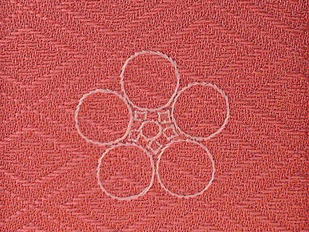

お手持ちの着物や、新品の着物への紋入れを行います。また紋の入れ替えや、縫い紋、華紋などもお受けております。
1．入紋
黒留、喪服の石持（白く抜かれている所）の中に型紋を入れていきます。紋鑑・紋典に出ている紋は全て加工出来ます。
2．抜紋
色留袖、無地のきもの等は石持がない為、抜染剤を型抜きに摺り込み、地色を抜きます（男物の大判紋も含む）。
3．縫紋
コンピューターソフトによる精度の高いミシン縫いです。ケシ縫い、カゲスガ縫いは紋鑑・紋典に出ている紋は全てできます。手縫いではスガ縫い、コマスガ縫い、花紋（加賀紋）等があります。
代表的な縫い紋
 |
 | |
| けし縫い 芥子粒を散らしたような縫い方 一般的に広く使われる |
蛇腹縫い 撚(よ)りの強い糸を用いて糸目を粗く斜めにあらわしてかがるもの あまり使わない |
まつり縫い けし縫いよりも線を強調した縫い方 陰紋 |
| すが縫い 布目に沿って糸を通し、刺繍のように紋の全部を縫いこむもの |
陰すが縫い すが縫いの陰紋 まつり縫いよりも線が強調される |
さがら縫い 布表面に結び玉を作り刺す方法 立体的 |
加賀紋
| 松竹梅 その1 | 松竹梅 その2 | 松竹梅 その3 |
| 松竹梅 その4 | 秋ノ花 | 桜ノ枝丸 |
| 蘭ノ丸 | 藤に蝶 | 松に藤 |
| 花ノ丸 | 梅に鶯 | 浪に千鳥 |
4．摺込紋
顔料（胡粉）を摺り込む方式の紋で、男児祝着に多く見られます。
5．ゴフン仕上
紋の入れ替え等で紋が落ちない場合や紋が黄変している時に、その上からゴフン（胡粉）で型入れを行います。紋が通常の白と違い、真っ白く仕上がります。
6．摺込上絵
抜紋で抜けない場合に地色の所にそのまま白の顔料（胡粉）を摺り込んで、地を白くし、その上から特殊インクで上絵を摺り込む方法です。
| 白の顔料で摺り込む | その上から上絵を入れる |